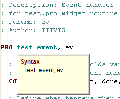
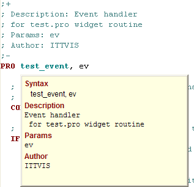
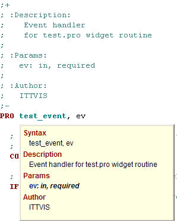

When you open a code file, isn’t it a relief to see that the developer left some documentation? You can return the favor for other developers by using the commenting features available in IDL.
For basic documentation, you can use the standard comments that begin with a semicolon (;). IDL ignores the text that follows it until the end of the line.
To develop more advanced documentation, you can use the format created for a third-party program called IDLdoc . This format extends the commenting format, providing tokens that allow you to insert complex documentation inside .pro code.
The biggest advantage of using the IDLdoc style is that the workbench uses the IDLdoc format to display formatted text as Hover Help and provide Content Assist for user-written routines. (See the Hover Help Example and Inserting Tags using Content Assist .)
The following illustrations show the differences between simple IDL comments and the IDLdoc format:
|
Simple IDL comments are not displayed in Hover Help:

|
Using just the IDLdoc opening (+) and closing (-) tags displays unformatted information in Hover Help:  |
|
Using full IDLdoc comments with indented styles displays fully formatted Hover Help :  |
|
IDLdoc is a third-party application, written in IDL by Michael Galloy. The IDLdoc package consists of the following:
When an IDL source code file is located in the IDL path (defined by the !PATH system variable), the workbench parses any IDLdoc comment tags and uses the information when displaying Hover Help or Content Assist for the routines defined in the file. You do not need to install the IDLdoc application itself to take advantage of the Hover Help and Content Assist features of the IDL Workbench. If you wish to generate HTML output from your IDL source code, you must install the IDLdoc application, described in Installing the IDLdoc Package .
The IDLdoc style provides for file comments and routine comments.
Both types of comments use the same basic formatting, discussed in Formatting IDLdoc Comment Blocks . For information on customizing comment blocks and inserting them in code, see Inserting Formatted Comment Blocks .
Note: Use file comments only in conjunction with routine comments. If file comments exist in a .pro file without routine comments, Hover Help will display the file comment for the following routine.